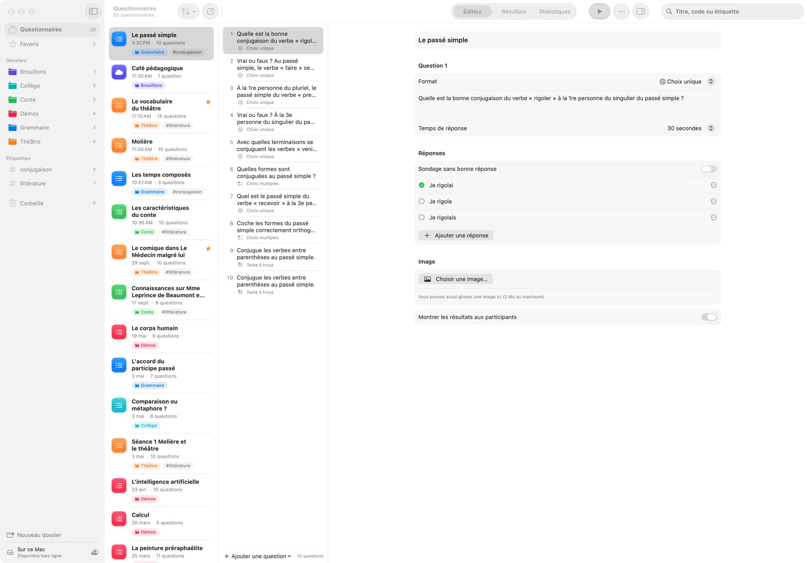
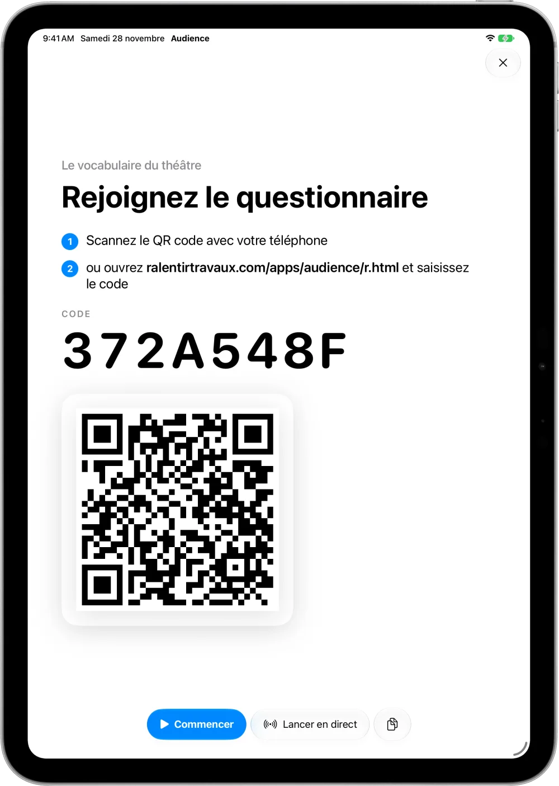
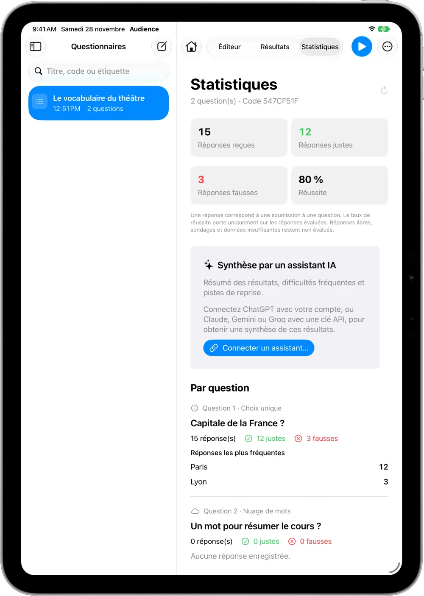
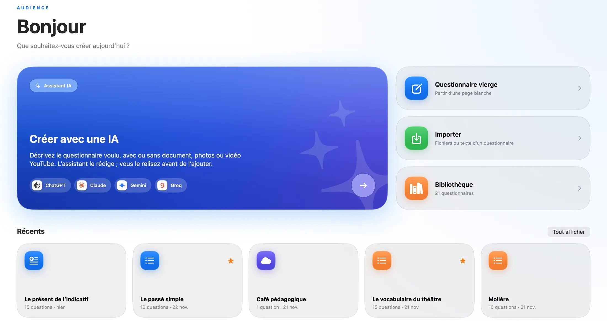
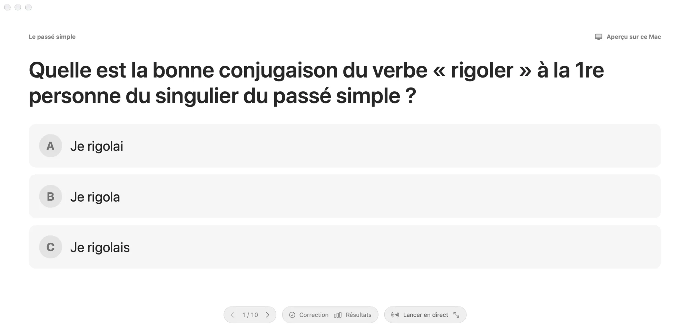
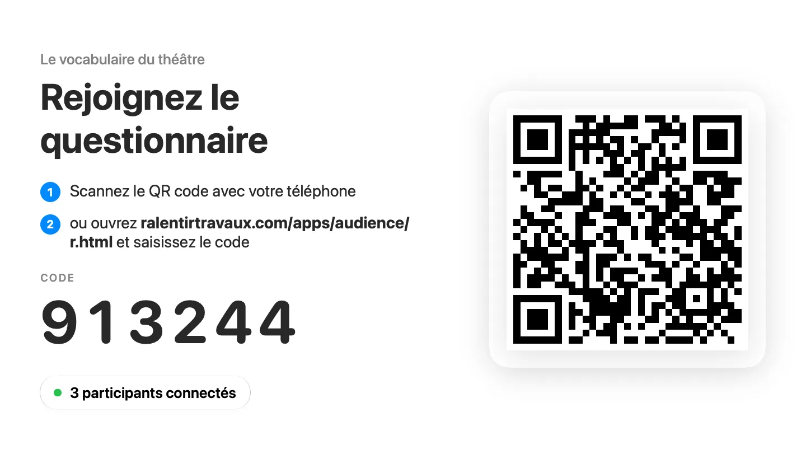
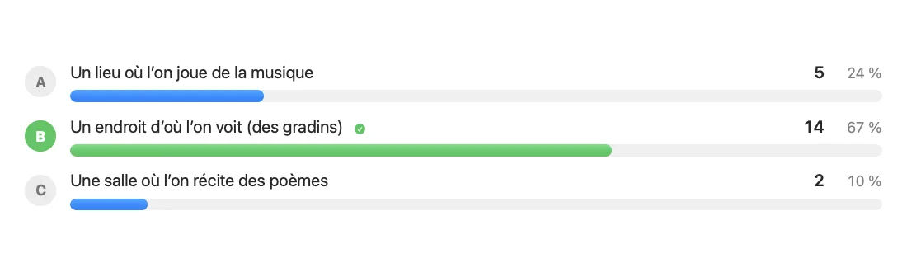

Audience pour Mac
Fenêtres, raccourcis clavier, glisser-déposer, création par IA et synthèse des résultats, au besoin par une IA locale.
TéléchargerAudience pour Mac et iPad
Préparez vos questionnaires, seul ou avec une IA, projetez-les en plein écran et voyez les réponses de la salle arriver en temps réel. Deux vraies applications, rapides, élégantes et utilisables hors ligne.
Gratuit et libre · macOS 26 et iPadOS 26 ou ultérieur


Deux apps, une bibliothèque
Connectez votre compte Audience : questionnaires, dossiers et étiquettes vous suivent d’un appareil à l’autre, et sur le site.
Fenêtres, raccourcis clavier, glisser-déposer, création par IA et synthèse des résultats, au besoin par une IA locale.
TéléchargerTout le tactile : préparez en portrait ou en paysage, présentez en plein écran, pilotez le direct du bout des doigts. Et la même création par IA.
Tester avec TestFlightAudience pour iPad Bêta publique
Préparez dans le train, présentez depuis l’estrade, suivez les réponses en direct. Votre bibliothèque vous attend, synchronisée avec le Mac et le site.



Sur un Mac ?
Visez ce code avec
l’appareil photo de l’iPad.
Gratuit · iPadOS 26 ou ultérieur · avec l’app TestFlight d’Apple
Créer avec une IA
Joignez un document, quelques photos ou une vidéo, ou décrivez simplement ce que vous voulez. L’assistant de votre choix rédige les questions ; vous relisez, corrigez, puis ajoutez le tout à la bibliothèque.

Un PDF, un document Word, un fichier texte ou Markdown, jusqu’à dix photos d’une page de manuel, d’un tableau ou d’une fiche, ou l’adresse d’une vidéo YouTube. Ou une simple demande : « un quiz sur la photosynthèse, avec un texte à trous et deux questions ouvertes ».
ChatGPT avec votre compte, ou Claude, Gemini et Groq avec une clé API, gardée dans le Trousseau.
De 5 à 20 questions, vos consignes, puis une relecture : tout reste modifiable, et une question à corriger est signalée avant l’ajout.
La source n’est envoyée qu’au moment de générer le questionnaire, et seulement au service choisi.
Le bouton « Créer avec une IA » vous attend sur l’accueil, sur Mac comme sur iPad. Au clavier du Mac : ⌥⌘N.
Préparer
Dossiers colorés, étiquettes, favoris et recherche instantanée : retrouvez n’importe quel questionnaire par son titre, son code ou son étiquette. Glissez, déposez, c’est rangé.

Présenter
Lancez le direct : un QR code s’affiche en grand, les téléphones patientent, puis tout le monde commence en même temps. Au clavier sur Mac, au doigt sur iPad, qui reste éveillé jusqu’à la fin.



Analyser
Taux de réussite, réponses les plus fréquentes, export CSV. Et une synthèse rédigée par l’assistant de votre choix ou, sur Mac, par une IA qui tourne sur votre ordinateur.
Avec Ollama, Audience résume les résultats, repère les difficultés et propose des pistes de reprise. Sans clé API, sans envoi des noms des participants, et hors ligne une fois le modèle installé.
Réponses justes et fausses, taux de réussite et réponses fréquentes, question par question.
Mac, iPad et navigateur partagent la même bibliothèque grâce à votre compte.
Ouvrez un fichier Markdown, une archive du site ou collez simplement le texte d’un questionnaire.
SwiftUI, Liquid Glass, plein écran, mode sombre. Sans Electron ni navigateur caché.
Gratuite, libre et sans publicité. Le code source est ouvert à tous.
Mac : macOS 26 ou ultérieur, application universelle signée et notarisée par Apple.
Décompressez l’archive, puis glissez Audience dans le dossier Applications.
iPad : iPadOS 26 ou ultérieur, en version bêta sur TestFlight.
Ouvrez le lien depuis l’iPad : il propose d’installer l’app TestFlight d’Apple, puis Audience.